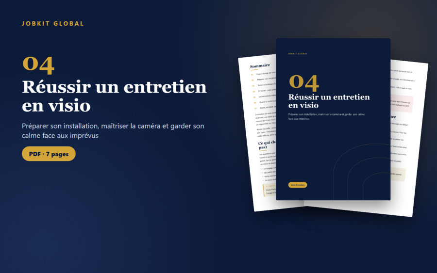

Série Entretien
Réussir un entretien en visio
Préparer son installation, maîtriser la caméra et garder son calme face aux imprévus

L'entretien en visio semble plus simple qu'un entretien sur place : pas de trajet, pas de salle d'attente, vos notes à portée de main. Pourtant, beaucoup de candidats perdent des points pour des raisons qui n'ont rien à voir avec leurs compétences : un visage dans l'ombre, une connexion qui fige, un regard rivé sur l'écran plutôt que sur la caméra, ou un recruteur qui vous entend mal.
Bonne nouvelle : presque tout ce qui peut mal tourner en visio s'anticipe. Ce guide vous accompagne pas à pas : l'installation, les réflexes qui créent la confiance à l'écran, le cas particulier des entretiens vidéo différés, et les phrases exactes à dire quand la technique vous lâche.
Obtenir le guide complet
PDF imprimable avec toutes les parties, les modèles et la check-list. Téléchargement immédiat.
Ce qui change en visio (et ce qui ne change pas)
Les questions sont les mêmes qu'en face à face, et l'objectif aussi : prouver que vous savez faire le travail et qu'on aura envie de travailler avec vous. Ce qui change, c'est la façon dont votre message passe. Sur un petit écran, le recruteur ne voit que votre visage et vos épaules, vous entend à travers un micro et dispose de moins d'indices pour vous cerner.
- Le langage corporel est réduit : votre visage, votre voix et votre posture portent presque tout.
- Les petits décalages favorisent les interruptions : marquer des pauses nettes devient essentiel.
- Votre environnement fait partie de la première impression : lumière, son et arrière-plan.
- Un souci technique peut arriver, et votre façon d'y réagir est elle aussi observée.
Préparer son installation la veille
Installez-vous la veille, si possible à la même heure que l'entretien pour avoir une lumière comparable. Ensuite, ne touchez plus à rien.
- Lumière : placez-vous face à une fenêtre ou mettez une lampe derrière votre écran. Évitez une fenêtre ou une lampe vive dans votre dos, qui transforme votre visage en ombre chinoise.
- Hauteur de la caméra : surélevez votre ordinateur portable avec des livres ou une boîte pour que la caméra soit à hauteur des yeux. Une caméra filmée d'en bas est peu flatteuse et donne une impression de distance.
- Cadrage : laissez un peu d'espace au-dessus de votre tête et montrez vos épaules. Vous devez être à peu près au centre de l'image.
- Arrière-plan : choisissez un mur neutre et rangé ou une bibliothèque simple. Si vous utilisez un flou ou un fond virtuel, testez-le : des contours qui scintillent distraient.
- Son : prenez la pièce la plus calme, fermez la fenêtre et utilisez des écouteurs filaires avec micro si vous en avez. Le son est généralement plus net qu'avec le micro de l'ordinateur et l'écho disparaît.
- Connexion : installez-vous près de votre box ou branchez un câble si possible, et demandez à votre entourage d'éviter le streaming pendant votre créneau.
L'ordinateur posé sur trois gros livres, le bureau face à la fenêtre, un mur clair et uni derrière, le téléphone dans une autre pièce, des écouteurs filaires branchés, un verre d'eau et une seule feuille de notes près du clavier. Aucun matériel particulier, et le rendu fait professionnel.
Tester la technique (check-list en 30 minutes)
La plupart des soucis en visio viennent du logiciel, pas du matériel. Les recruteurs utilisent des outils très variés : ne partez pas du principe que ce sera celui que vous connaissez.
La suite dans le guide complet
À l'écran : créer présence et confiance
En visio, le lien se crée grâce à de petites habitudes volontaires. Elles paraissent étranges au début : c'est pour cela qu'il faut les travailler avant le jour J.
La suite dans le guide complet
Les entretiens vidéo différés
Certaines entreprises vous demandent d'enregistrer vos réponses à des questions affichées à l'écran, sans personne en face. Les règles varient selon la plateforme : lisez bien les consignes pour savoir combien de temps de préparation vous avez, la durée maximale de chaque réponse et si vous pouvez recommencer.
La suite dans le guide complet
Quand la technique vous lâche
Les bugs arrivent à tout le monde, recruteurs compris. Ce qu'on retient, c'est votre calme et votre façon de régler le problème. Quand vous confirmez l'entretien, demandez un numéro de téléphone à appeler en cas de souci : votre plan B sera prêt.
La suite dans le guide complet
Avant, pendant, après : votre déroulé
La suite dans le guide complet
Un entretien en visio reste une conversation entre deux personnes. Préparez votre installation une fois, et la caméra cessera d'être un obstacle pour devenir une alliée.
Ce que contient le guide complet
- Ce qui change en visio (et ce qui ne change pas)
- Préparer son installation la veille
- Tester la technique (check-list en 30 minutes)
- À l'écran : créer présence et confiance
- Les entretiens vidéo différés
- Quand la technique vous lâche
- Avant, pendant, après : votre déroulé
- Check-list : Avant votre entretien en visio
Obtenir le guide complet
PDF imprimable avec toutes les parties, les modèles et la check-list. Téléchargement immédiat.
Besoin d’un CV aussi ?
Le kit JobKit Global : 5 modèles de CV compatibles ATS, 5 lettres de motivation, un tableau de suivi de candidatures et un guide d’entretien.